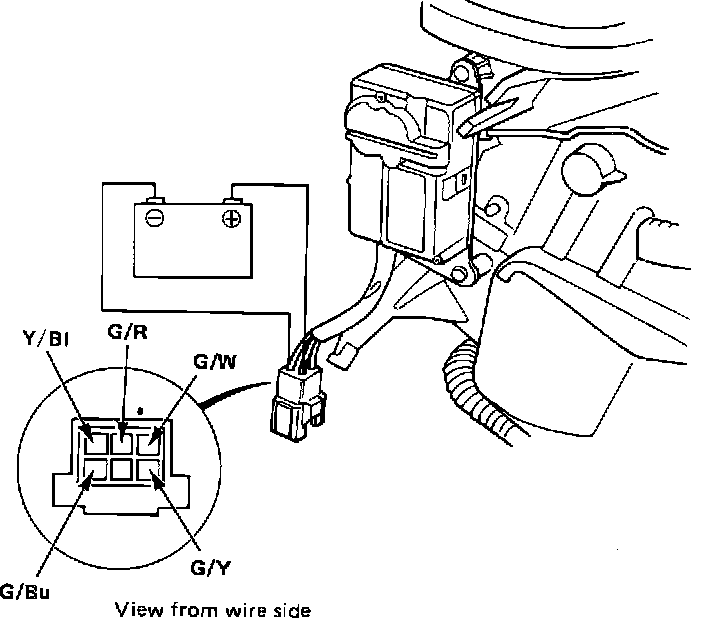

Recirculation Control Motor
Recirculation Control Motor Testing:

1. Connect battery positive to Y/BI terminal and negative to G/Bu terminal. Motor should run.
2. Connect ohmmeter probes across G/Y and G/R terminals. Meter should cycle back and forth, but hesitate slightly when indicating continuity.
3. Connect ohmmeter to terminals G/Y and G/W. Meter should cycle back and forth, but hesitate slightly when indicating continuity.